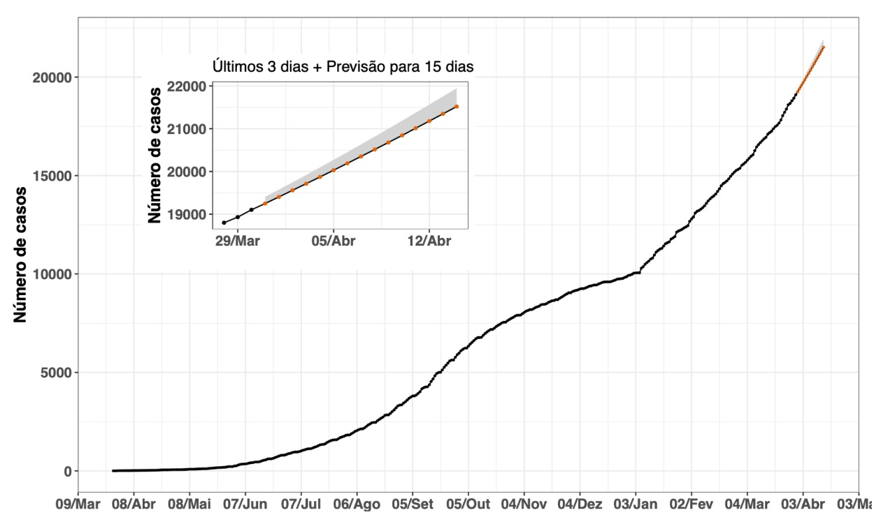
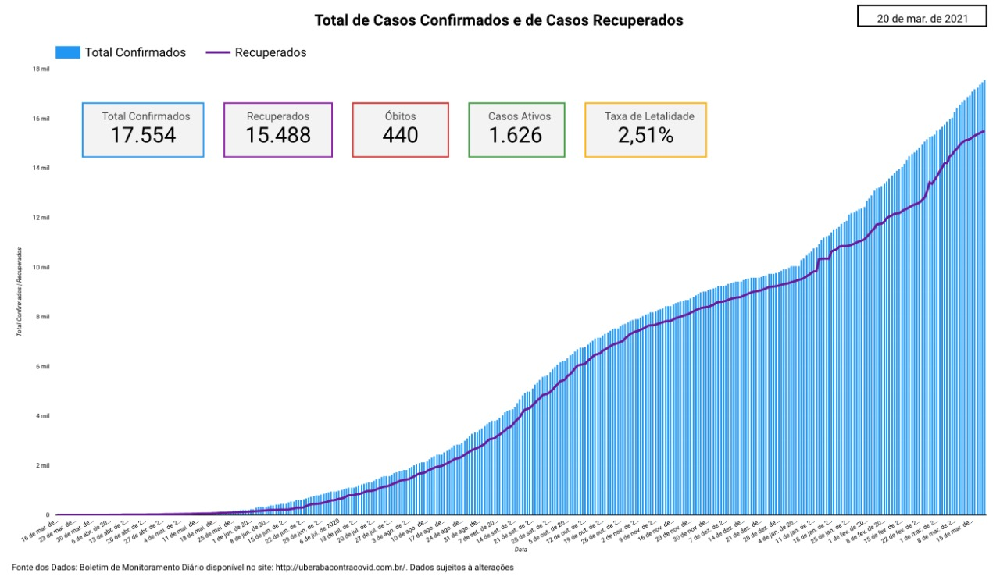
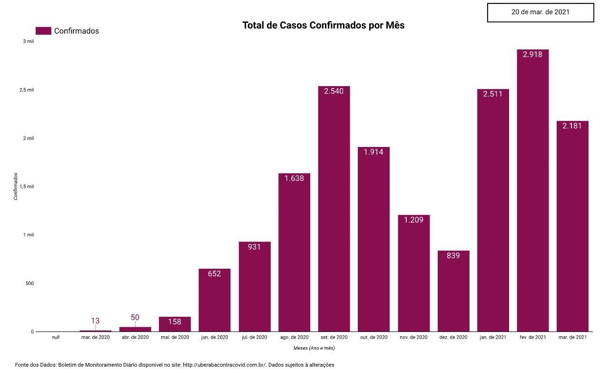
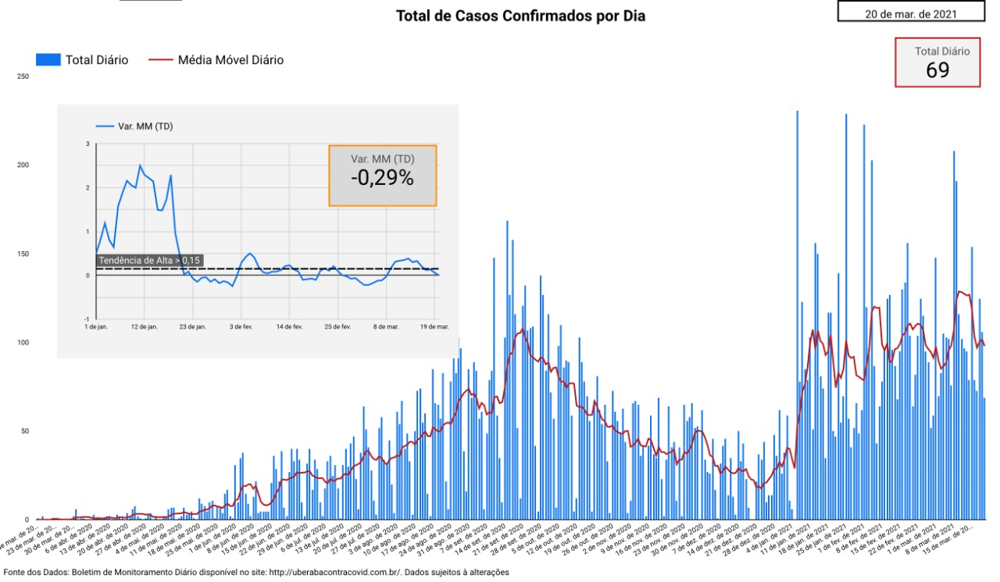
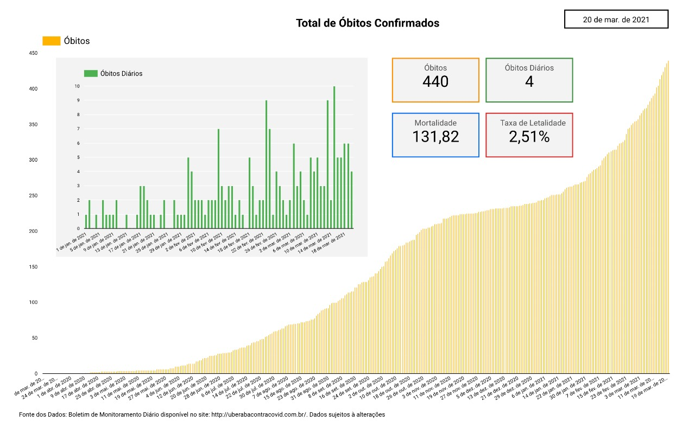
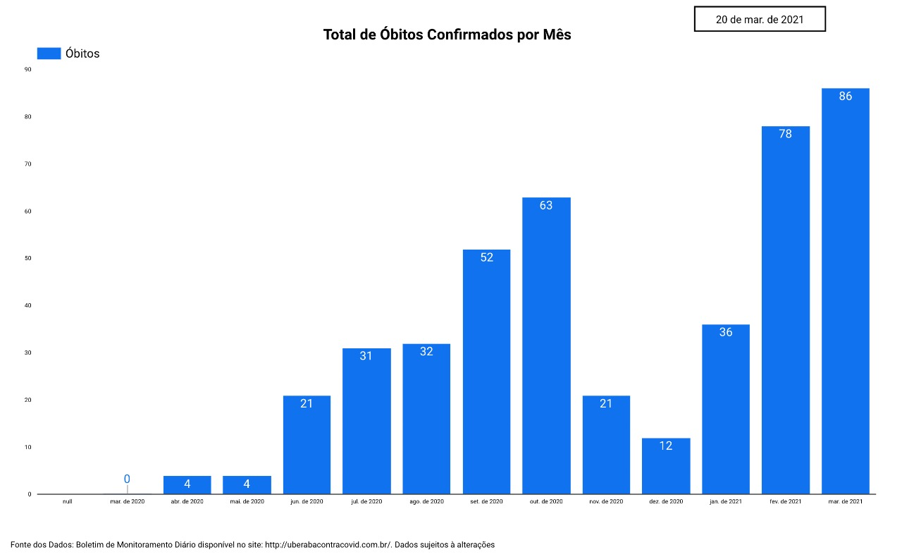
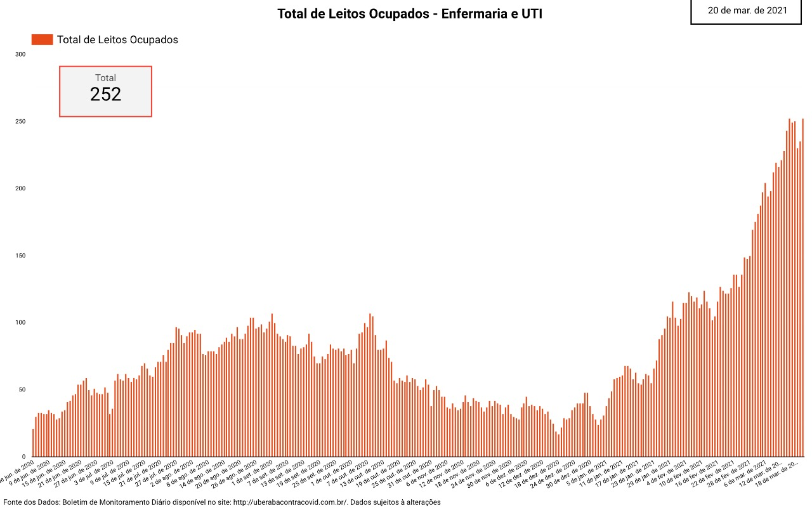
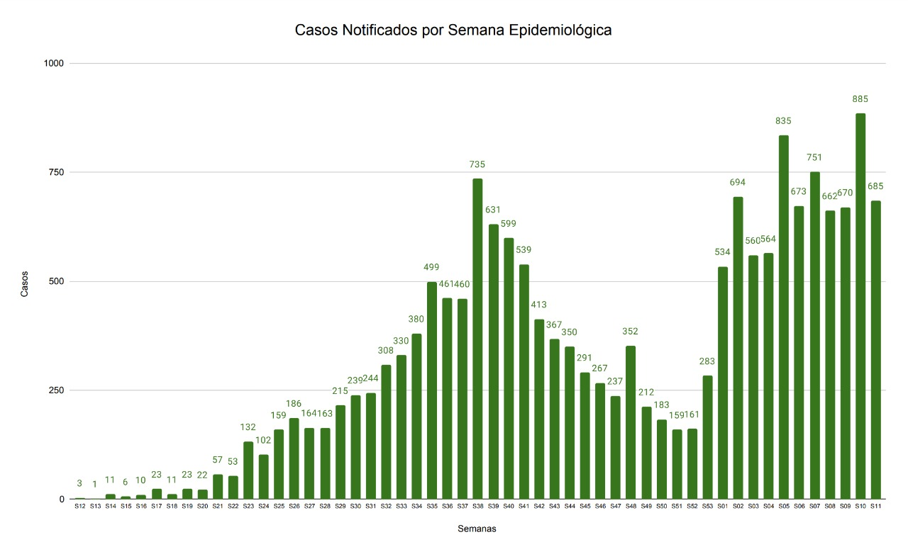
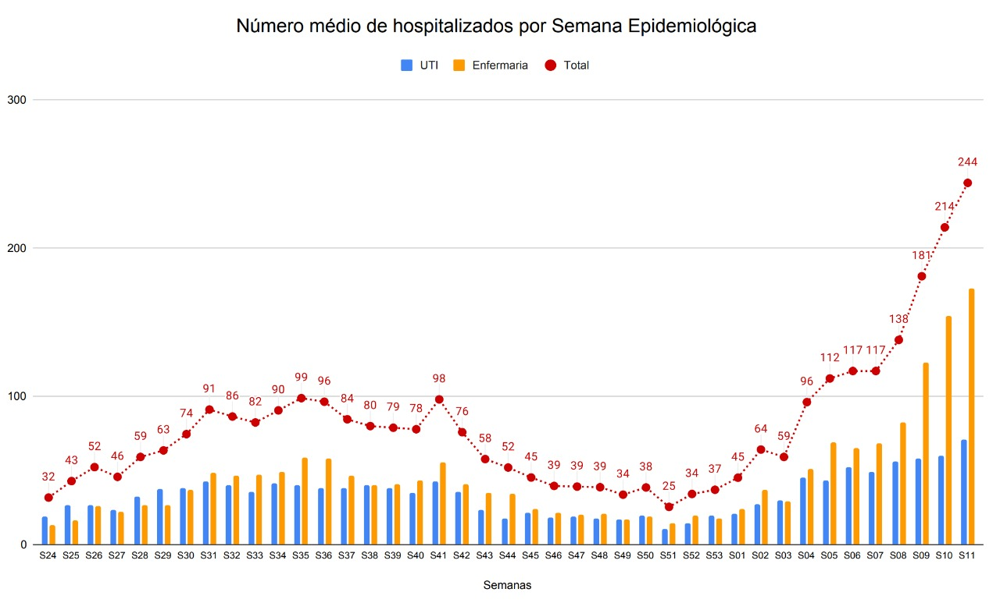
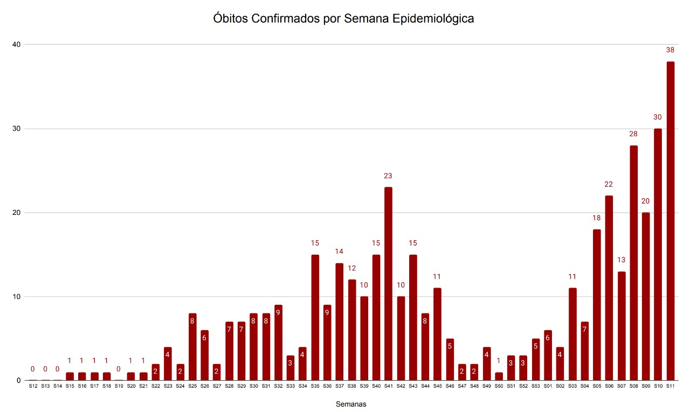

Previsão de Curto Prazo da Covid-19 em Uberaba
- No dia de hoje (20/03/2021), acumulamos 17554 casos notificados.
- Projeção para dia 25 de março é de 18068 podendo chegar até 18056 casos notificados, como indicado pela faixa cinza.
- Pontos pretos: número de casos confirmados a cada dia.
- Pontos laranjas: a previsão para os próximos 5 dias.

Figura 1: Estimativas de crescimento exponencial para os próximos 5 dias para o Município de Uberaba. Projeções dentro de um intervalo de 95% de confiança.
Total de Casos Confirmados

Figura 2: Total acumulado de casos de Covid-19 em Uberaba e média móvel considerando intervalos de sete dias.

Figura 3: Total de casos notificados de COVID-19 em Uberaba por mês
Casos Diários Confirmados

Figura 4: Novos casos diários confirmados e média móvel
Uma informação importante que vem sendo apresentada por pesquisadores da área, refere-se a média móvel. Os números diários têm variações muito grandes e isso não têm necessariamente relação com o avanço do vírus, como atrasos nos registros, falta de testes, entre outros problemas, o novo gráfico busca reduzir esses efeitos.
A Variação da Média Móvel corresponde à variação da média móvel comparando o valor de hoje com o de 14 dias atrás.
- Entre -15% e 15% tendência de estabilidade.
- > 15% tendência de alta.
- < - 15% tendência de queda.
Óbitos da Covid-19 em Uberaba
O gráfico da Figura 5 apresenta a evolução do número de óbitos.

Figura 5: Total de óbitos e óbitos diários

Figura 6: Total de óbitos por mês
Ocupação dos Leitos
O gráfico da Figura 7 apresenta a ocupação dos leitos de UTI e Enfermaria na cidade de Uberaba.

Figura 7: Ocupação dos leitos de UTI e Enfermaria por COVID-19 em Uberaba
Evolução dos Indicadores por Semana Epidemiológica

Figura 8: Casos notificados por Semana Epidemiológica em Uberaba

Figura 9: Ocupação dos leitos de UTI e Enfermaria por COVID-19 em Uberaba por Semana Epidemiológica

Figura 10: Óbitos confirmados por Semana Epidemiológica em Uberaba